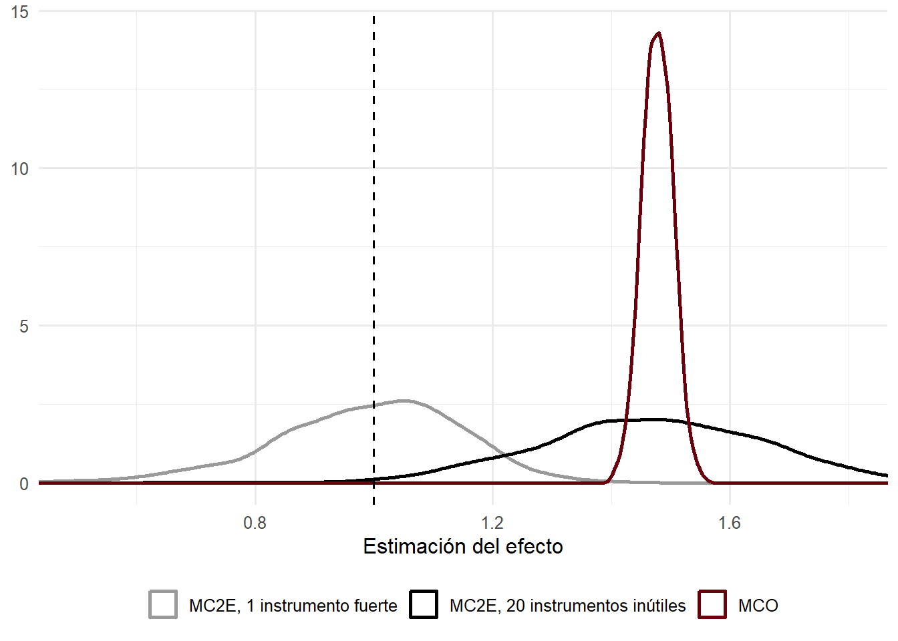

| Estrategias de identificación del curso | |||
| Método | Supuesto de identificación | Qué se identifica | Sesión |
|---|---|---|---|
| Regresión y matching | La selección ocurre solo en variables observables; condicional en ellas, el tratamiento es como si fuera aleatorio. | ATE o ATT | 5 |
| Variables instrumentales | Existe una variable que mueve el tratamiento, es independiente de los resultados potenciales y solo afecta el resultado a través del tratamiento. | LATE (efecto en los compliers) | 2 |
| Regresión discontinua | No hay otras discontinuidades en el punto de corte y no hay manipulación de la variable de asignación. | Efecto local en el corte | 3 |
| Diferencias en diferencias | En ausencia de tratamiento, tratados y controles habrían seguido trayectorias paralelas. | ATT | 4 |
| Todas suponen además SUTVA. La regresión discontinua difusa es un caso de variables instrumentales. | |||
Sesión 2: Variables instrumentales
Wald, mínimos cuadrados en dos etapas, LATE e instrumentos shift-share
Introducción
La sesión anterior mostró que la asignación aleatoria resuelve el problema de selección. La mayoría de las preguntas que interesan en economía, sin embargo, no admiten un experimento, y hay que trabajar con datos observacionales buscando alguna fuente de variación que se comporte como si hubiera sido asignada al azar. Esta sesión estudia la más antigua de esas estrategias, las variables instrumentales (IV). Se parte del caso con efectos constantes y del estimador de Wald, se generaliza a mínimos cuadrados en dos etapas y luego se pregunta qué identifica un instrumento cuando los efectos difieren entre personas, lo que lleva al efecto promedio local del tratamiento (LATE). Después se discuten los problemas de los instrumentos débiles a partir del trabajo de Angrist y Krueger (1991), que es también la lectura del primer control. La sesión termina con los instrumentos shift-share y dos aplicaciones en R, una con los datos de Card (1995) sobre retornos a la educación y otra con la CASEN sobre migración y salarios.
Las lecturas obligatorias son el capítulo 4 de Mostly Harmless Econometrics (Angrist y Pischke 2009) y el capítulo 7 de Causal Inference: The Mixtape (Cunningham 2021).
1 Más allá del experimento
Cuando no es posible aleatorizar, se intenta reproducir lo que habría hecho un experimento con datos observacionales, en lo que suele llamarse un diseño cuasi-experimental. Las estrategias que se ven en el curso se distinguen por el supuesto con que justifican esa aproximación.
2 La idea de un instrumento
2.1 Origen
El método surgió para un problema que la econometría arrastra desde sus inicios. Cuando dos variables se determinan simultáneamente, como el precio y la cantidad en un mercado, los datos observados son puntos de equilibrio y una regresión de una sobre otra no recupera ni la curva de oferta ni la de demanda. Wright (1928), en un apéndice de un libro sobre aranceles a los aceites, propuso usar factores que desplazan una de las curvas sin afectar la otra. Una variable que mueve solo la oferta, como el clima en las zonas productoras, traza la curva de demanda. Theil y Koopmans formalizaron la idea a mediados de siglo y desarrollaron los mínimos cuadrados en dos etapas. En los años noventa el método reapareció como herramienta de inferencia causal con trabajos como Angrist (1990), que usó la lotería del reclutamiento para Vietnam, y Angrist y Krueger (1991), que usó el trimestre de nacimiento. Imbens y Angrist (1994) dieron el marco que se usa hoy para interpretar lo que estiman.
2.2 Relevancia y exclusión
El problema de partida es que el tratamiento \(T_i\) no es independiente de los resultados potenciales, \(T_i \not\perp (Y_{0i}, Y_{1i})\). En el ejemplo clásico de educación y salarios, la habilidad, la motivación y el origen familiar afectan tanto los años de estudio como los ingresos, y MCO confunde ambos efectos. Un instrumento es una variable \(Z_i\) que permite aislar una parte de la variación en \(T_i\) que no está contaminada por esos factores. Para eso debe cumplir dos condiciones.
La primera es la relevancia. El instrumento tiene que mover el tratamiento, \(\text{Cov}(Z_i, T_i) \neq 0\). Esto se puede verificar en los datos.
La segunda es la exogeneidad, que combina dos ideas. El instrumento debe ser tan bueno como asignado al azar respecto de los resultados potenciales, y no debe afectar el resultado por ninguna vía distinta del tratamiento. Esta última es la restricción de exclusión. A diferencia de la relevancia, la exogeneidad no se puede verificar directamente y debe defenderse con argumentos sobre el contexto.
Si ambas condiciones se cumplen, el instrumento genera variación en \(T_i\) que es como un experimento, y esa parte de la variación sí admite una interpretación causal.
El ejemplo con que abren las slides es el Job Training Partnership Act (JTPA), un programa de capacitación laboral evaluado con asignación aleatoria. No todos cumplieron la asignación: muchos de los asignados a capacitarse no lo hicieron y algunos controles lograron inscribirse. La comparación por asignación da el efecto de la intención de tratar (ITT), como se vio en la sesión 1. Si interesa el efecto de recibir la capacitación, la asignación aleatoria puede usarse como instrumento de la capacitación efectiva.
3 Efecto constante y estimador de Wald
Se parte del caso más simple, con instrumento y tratamiento binarios. Además de los resultados potenciales \(Y_{1i}, Y_{0i}\), se definen tratamientos potenciales \(T_{1i}\) y \(T_{0i}\), el tratamiento que \(i\) recibiría si \(Z_i = 1\) o si \(Z_i = 0\). Lo observado es
\[ Y_i = T_i Y_{1i} + (1 - T_i) Y_{0i}, \qquad T_i = Z_i T_{1i} + (1 - Z_i) T_{0i}. \]
Que los resultados potenciales se indexen solo por \(T\), y no por \(Z\), ya incorpora la restricción de exclusión. Los supuestos son tres. El instrumento es independiente de los resultados potenciales, \(Z_i \perp (Y_{0i}, Y_{1i})\). Es relevante, \(0 < \Pr(Z_i = 1) < 1\) y \(\Pr(T_{1i} = 1) \neq \Pr(T_{0i} = 1)\). Y el efecto del tratamiento es el mismo para todos, \(Y_{1i} - Y_{0i} = \tau\).
Con efecto constante se puede escribir \(Y_i = \gamma + \tau T_i + u_i\), donde en general \(E[T_i u_i] \neq 0\), pero por los supuestos \(E[Z_i u_i] = 0\). Entonces
\[ \text{Cov}(Y_i, Z_i) = \tau\,\text{Cov}(T_i, Z_i) + \text{Cov}(u_i, Z_i) = \tau\,\text{Cov}(T_i, Z_i), \]
y el efecto queda identificado como un cociente,
\[ \tau = \frac{\text{Cov}(Y_i, Z_i)}{\text{Cov}(T_i, Z_i)} = \frac{E[Y_i \mid Z_i = 1] - E[Y_i \mid Z_i = 0]}{E[T_i \mid Z_i = 1] - E[T_i \mid Z_i = 0]} . \tag{1}\]
La segunda igualdad vale cuando \(Z\) es binaria. Su análogo muestral es el estimador de Wald, que divide la diferencia de resultados entre grupos definidos por el instrumento por la diferencia en la probabilidad de tratamiento. Como las covarianzas muestrales convergen a las poblacionales, el estimador es consistente siempre que \(\text{Cov}(T_i, Z_i) \neq 0\).
La versión más conocida de este cálculo está en la reinterpretación que Angrist y Imbens (1995) hacen de Angrist y Krueger (1991). Comparan a los hombres nacidos en la primera mitad del año con los nacidos en la segunda mitad, en el censo de 1980.
| Estimador de Wald del retorno a la educación con trimestre de nacimiento | |||
| Nacidos en trimestres 1 o 2 | Nacidos en trimestres 3 o 4 | Diferencia | |
|---|---|---|---|
| ln(salario semanal) | 5.8916 | 5.9051 | −0,01349 (0,00337) |
| Años de educación | 12.6881 | 12.8394 | −0,1514 (0,0162) |
| Estimador de Wald: 0,0891 (0,0210). MCO: 0,0703 (0,0005). Hombres nacidos entre 1930 y 1939, censo de EE. UU. de 1980, N = 329.509. Fuente: Angrist y Pischke (2009, tabla 4.1.2), basada en Angrist e Imbens (1995). | |||
Los nacidos en la segunda mitad del año tienen 0,15 años más de educación y ganan un 1,3 % más. El cociente entre ambas diferencias, \(0{,}01349 / 0{,}1514 \approx 0{,}089\), es el retorno de un año de educación según el instrumento, algo mayor que el 7 % que entrega MCO.
4 Mínimos cuadrados en dos etapas
4.1 Las tres regresiones
El estimador de Wald se generaliza a instrumentos y tratamientos no binarios, a varios instrumentos y a la inclusión de covariables mediante mínimos cuadrados en dos etapas (MC2E, o 2SLS en inglés). Sea el modelo \(Y_i = \beta_0 + \beta_1 X_i + u_i\) con \(X_i\) endógena y un instrumento \(Z_i\) que cumple \(\text{Cov}(Z_i, u_i) = 0\) y \(\text{Cov}(Z_i, X_i) \neq 0\). El procedimiento tiene dos pasos. En la primera etapa se estima por MCO
\[ X_i = \pi_0 + \pi_1 Z_i + \eta_i \]
y se calcula el valor predicho \(\hat X_i = \hat\pi_0 + \hat\pi_1 Z_i\), que contiene solo la parte de \(X_i\) que se mueve con el instrumento. En la segunda etapa se regresiona \(Y_i\) sobre \(\hat X_i\). Con un instrumento, el estimador resultante es
\[ \hat\beta_1^{\text{MC2E}} = \frac{\sum_i (Z_i - \bar Z)(Y_i - \bar Y)}{\sum_i (Z_i - \bar Z)(X_i - \bar X)} , \]
que es el análogo muestral de \(\text{Cov}(Z_i, Y_i) / \text{Cov}(Z_i, X_i)\). Es sesgado en muestras finitas, porque es un cociente de dos cantidades aleatorias, pero consistente.
Conviene tener presente una tercera regresión, la forma reducida, que regresiona directamente el resultado sobre el instrumento, \(Y_i = \delta_0 + \delta_1 Z_i + e_i\). Con un instrumento, el estimador de MC2E es exactamente el cociente entre la forma reducida y la primera etapa, \(\hat\beta_1 = \hat\delta_1 / \hat\pi_1\). Esto tiene un uso práctico. La forma reducida es una regresión por MCO del resultado sobre una variable que se supone exógena, de modo que si no muestra ninguna relación es difícil creer que exista un efecto causal que el instrumento pueda revelar (Angrist y Pischke 2009, cap. 4).
4.2 Covariables y errores estándar
Las covariables exógenas \(W_i\) se incluyen en ambas etapas. Cuando hay más instrumentos que variables endógenas, el modelo está sobreidentificado y MC2E combina los instrumentos usando la primera etapa como ponderador.
Un error frecuente es estimar las dos etapas a mano con dos regresiones de MCO. El coeficiente es correcto, pero los errores estándar de la segunda regresión no lo son, porque usan los residuos calculados con \(\hat X_i\) en vez de \(X_i\). Cualquier software de IV hace la corrección, y conviene usarlo siempre.
5 Efectos heterogéneos y LATE
5.1 Tipos de cumplimiento
En la mayoría de las aplicaciones no es razonable suponer que el efecto es igual para todos. Con efectos heterogéneos, \(Y_i = \gamma + \tau_i T_i + u_i\), el ATE en general no está identificado. Imbens y Angrist (1994) mostraron que, con un supuesto adicional sobre el instrumento, sí se identifica otro parámetro bien definido.
Con instrumento y tratamiento binarios, la población se divide en cuatro grupos según cómo responde el tratamiento al instrumento.
- Los compliers se tratan si \(Z_i = 1\) y no se tratan si \(Z_i = 0\) (\(T_{1i} = 1\), \(T_{0i} = 0\)).
- Los always-takers se tratan siempre (\(T_{1i} = T_{0i} = 1\)).
- Los never-takers nunca se tratan (\(T_{1i} = T_{0i} = 0\)).
- Los defiers hacen lo contrario de lo que indica el instrumento (\(T_{1i} = 0\), \(T_{0i} = 1\)).
Ninguno de estos grupos es observable individualmente. Un tratado con \(Z_i = 1\) puede ser complier o always-taker, y un no tratado con \(Z_i = 0\) puede ser complier o never-taker.
5.2 El teorema LATE
Los supuestos son ahora tres. El primero es la exogeneidad del instrumento, \(Z_i \perp (Y_{0i}, Y_{1i}, T_{0i}, T_{1i})\), que incluye la asignación como si fuera aleatoria y la restricción de exclusión. El segundo es la relevancia, \(E[T_{1i} - T_{0i}] \neq 0\). El tercero, nuevo, es la monotonicidad, \(T_{1i} \geq T_{0i}\) para todo \(i\). El instrumento puede no afectar a algunas personas, pero a quienes afecta los mueve en la misma dirección, de modo que no hay defiers.
Bajo estos supuestos, el estimador de Wald identifica el efecto promedio del tratamiento en los compliers (Imbens y Angrist 1994),
\[ \tau_{\text{LATE}} = E[Y_{1i} - Y_{0i} \mid T_{1i} > T_{0i}] = \frac{E[Y_i \mid Z_i = 1] - E[Y_i \mid Z_i = 0]}{E[T_i \mid Z_i = 1] - E[T_i \mid Z_i = 0]} . \]
Para ver de dónde viene, basta notar que los always-takers y los never-takers tienen el mismo tratamiento con cualquier valor del instrumento, así que no contribuyen a la diferencia en resultados entre \(Z_i = 1\) y \(Z_i = 0\). Por la exogeneidad del instrumento, la forma reducida se descompone como
\[ E[Y_i \mid Z_i = 1] - E[Y_i \mid Z_i = 0] = E[Y_{1i} - Y_{0i} \mid \text{complier}]\Pr(\text{complier}) - E[Y_{1i} - Y_{0i} \mid \text{defier}]\Pr(\text{defier}), \]
y la primera etapa como \(\Pr(\text{complier}) - \Pr(\text{defier})\). Sin monotonicidad, el cociente pondera los efectos de compliers y defiers con pesos que pueden tener signos opuestos, y no tiene una interpretación clara. La monotonicidad elimina a los defiers y el cociente se reduce al efecto en los compliers.
5.3 Qué dice y qué no dice el LATE
Sin supuestos adicionales, el LATE no coincide con el ATE ni con el ATT. Es el efecto en un grupo particular, el de quienes cambian su tratamiento por el instrumento, y distintos instrumentos para un mismo tratamiento identifican efectos en grupos distintos. Esto no es una falla del método, pero obliga a preguntar en cada aplicación quiénes son los compliers.
Hay un caso particular importante. Si el instrumento es una asignación aleatoria y nadie del grupo de control puede acceder al tratamiento, no hay always-takers, todos los tratados son compliers y el LATE coincide con el ATT. El estimador se reduce a dividir el ITT por la tasa de participación del grupo asignado, \(\tau = \text{ITT} / E[T_i \mid Z_i = 1]\), una corrección propuesta por Bloom (1984) para los experimentos con incumplimiento.
La simulación siguiente ilustra estas diferencias. Hay un 30 % de compliers, un 20 % de always-takers y un 50 % de never-takers, cada grupo con un efecto distinto, y los always-takers tienen además mejores resultados de base.
Código
n <- 20000
poblacion <- tibble(
tipo = sample(c("complier", "always", "never"), n, replace = TRUE, prob = c(0.3, 0.2, 0.5)),
efecto = case_when(tipo == "complier" ~ 2, tipo == "always" ~ 4, tipo == "never" ~ 1),
y0 = rnorm(n) + if_else(tipo == "always", 1, 0),
y1 = y0 + efecto,
z = rbinom(n, 1, 0.5),
t = as.numeric(tipo == "always" | (tipo == "complier" & z == 1)),
y = if_else(t == 1, y1, y0)
)
wald <- feols(y ~ 1 | t ~ z, data = poblacion)
tibble(
Parámetro = c("ATE (toda la población)", "ATT (tratados)", "LATE (compliers)",
"Diferencia ingenua por tratamiento", "Estimador de Wald / MC2E"),
Valor = c(
mean(poblacion$efecto),
mean(poblacion$efecto[poblacion$t == 1]),
mean(poblacion$efecto[poblacion$tipo == "complier"]),
mean(poblacion$y[poblacion$t == 1]) - mean(poblacion$y[poblacion$t == 0]),
coef(wald)[["fit_t"]]
)
) |>
gt() |>
fmt_number(columns = Valor, decimals = 2) |>
tab_row_group(label = "Estimadores", rows = 4:5) |>
tab_row_group(label = "Parámetros verdaderos", rows = 1:3) |>
row_group_order(groups = c("Parámetros verdaderos", "Estimadores")) |>
tabla_curso()| Parámetro | Valor |
|---|---|
| Parámetros verdaderos | |
| ATE (toda la población) | 1.89 |
| ATT (tratados) | 3.14 |
| LATE (compliers) | 2.00 |
| Estimadores | |
| Diferencia ingenua por tratamiento | 3.71 |
| Estimador de Wald / MC2E | 2.00 |
La diferencia ingenua entre tratados y no tratados mezcla efectos y selección. El estimador de Wald recupera el efecto de 2 en los compliers, que no es ni el ATE ni el ATT.
5.4 La evidencia del JTPA y el tamaño de los compliers
En el JTPA, la asignación aleatoria a la oferta de capacitación permite estimar el ITT y, usándola como instrumento, el efecto de capacitarse. Como el acceso del grupo de control fue muy limitado, casi no hay always-takers y la estimación por IV se aproxima al efecto en los tratados.
| JTPA: efecto de la capacitación en los ingresos (dólares), sin covariables | |||
| Grupo | Por capacitación recibida | Por asignación (ITT) | Variables instrumentales |
|---|---|---|---|
| Hombres | 3.970 | 1.117 | 1.825 |
| (555) | (569) | (928) | |
| Mujeres | 2.133 | 1.243 | 1.942 |
| (345) | (359) | (560) | |
| Errores estándar robustos entre paréntesis. Fuente: Angrist y Pischke (2009, tabla 4.4.1). | |||
En los hombres, la comparación por capacitación recibida duplica con creces la estimación por IV, señal de que quienes eligieron capacitarse tenían mejores perspectivas de ingreso. El ITT es menor que el efecto por IV porque no todos los asignados se capacitaron.
La primera etapa también dice cuántos compliers hay, porque bajo monotonicidad \(E[T_i \mid Z_i = 1] - E[T_i \mid Z_i = 0] = \Pr(\text{complier})\). Angrist y Pischke comparan varios instrumentos clásicos. La lotería de Vietnam movió el servicio militar del 15,9 % de los hombres blancos nacidos en 1950. Tener gemelos en el segundo parto movió la probabilidad de tener un tercer hijo en 60 puntos, y que los dos primeros hijos sean del mismo sexo, en 6 puntos. El trimestre de nacimiento, en cambio, movió la probabilidad de terminar la secundaria en apenas 1,6 puntos. Los compliers de Angrist y Krueger son una fracción pequeña de la población, y el LATE que estiman corresponde a personas que están en el margen de abandonar la escuela por la ley de escolaridad obligatoria (Angrist y Pischke 2009, tabla 4.4.2).
6 Instrumentos débiles
6.1 El sesgo de muestras finitas
El estimador de IV es un cociente de dos covarianzas muestrales. Aunque cada una sea aproximadamente insesgada, la esperanza de un cociente no es el cociente de las esperanzas. Cuando la covarianza entre instrumento y tratamiento resulta pequeña por azar, el cociente se infla. El problema es grave cuando el instrumento es débil, es decir, cuando la primera etapa es pequeña en relación con su error estándar. En ese caso el denominador es ruidoso, pequeñas fluctuaciones muestrales producen grandes cambios en el estimador y MC2E queda sesgado en la misma dirección que MCO. El sesgo se acerca al de MCO a medida que la correlación entre instrumentos y variable endógena tiende a cero, y crece con el número de instrumentos (Bound et al. 1995; Angrist y Pischke 2009, sec. 4.6.4).
La simulación siguiente reproduce la lógica de las figuras de MHE. La variable \(X\) es endógena y el efecto verdadero es 1. Se compara MCO con MC2E usando un instrumento fuerte y usando 20 instrumentos sin ningún poder predictivo.
Código
mc2e <- function(y, x, Z) {
Z <- cbind(1, Z)
x_hat <- Z %*% qr.solve(Z, x)
unname(qr.solve(cbind(1, x_hat), y)[2])
}
simular <- function(n = 1000) {
z_fuerte <- rnorm(n)
z_inutil <- matrix(rnorm(n * 20), n, 20)
u <- rnorm(n)
x <- 0.3 * z_fuerte + u + rnorm(n) # x está correlacionada con u
y <- 1 * x + u + rnorm(n)
c(MCO = unname(coef(lm(y ~ x))[2]),
`MC2E, 1 instrumento fuerte` = mc2e(y, x, z_fuerte),
`MC2E, 20 instrumentos inútiles` = mc2e(y, x, z_inutil))
}
estimaciones <- map_dfr(1:1000, ~ as_tibble_row(simular()))
estimaciones |>
pivot_longer(everything(), names_to = "Estimador", values_to = "beta") |>
ggplot(aes(beta, color = Estimador)) +
geom_density(linewidth = 1) +
geom_vline(xintercept = 1, linetype = "dashed") +
scale_color_manual(values = c("grey60", "black", col_uch)) +
coord_cartesian(xlim = c(0.5, 1.8)) +
labs(x = "Estimación del efecto", y = NULL) +
theme(legend.position = "bottom", legend.title = element_blank())
MCO está sesgado hacia arriba. Con el instrumento fuerte, MC2E se centra en el valor verdadero. Con veinte instrumentos irrelevantes, MC2E se apila sobre la estimación de MCO, aunque cada instrumento por separado sea exógeno, y sus errores estándar convencionales sugieren una precisión que no existe.
6.2 Diagnóstico y qué hacer
La práctica habitual es revisar siempre la primera etapa y su estadístico \(F\). Stock et al. (2002) propusieron que un \(F\) mayor que 10 en la primera etapa pone al investigador en una zona razonablemente segura, y esa es la regla que se enseña en la clase. Investigaciones posteriores la han matizado. Lee et al. (2022) muestran que, con un instrumento y el test \(t\) habitual al 5 %, la regla del 10 no garantiza el tamaño nominal, y que hace falta un \(F\) superior a 104,7 o bien corregir el valor crítico del test según el \(F\) observado. Andrews et al. (2019) recomiendan reportar el \(F\) efectivo de Montiel Olea y Pflueger (2013), que es válido con errores heterocedásticos o agrupados, y usar intervalos de confianza robustos a instrumentos débiles, como el de Anderson y Rubin, cuando hay un solo instrumento. Las recomendaciones de la clase siguen siendo válidas. Conviene preferir los instrumentos más fuertes en lugar de agregar muchos débiles, considerar LIML en vez de MC2E cuando el modelo está sobreidentificado, porque su sesgo es menor, y en último término buscar otro instrumento.
7 Angrist y Krueger (1991)
7.1 El diseño
Angrist y Krueger (1991) se preguntan por el retorno de un año adicional de educación. Su instrumento es el trimestre de nacimiento, y la primera etapa se apoya en dos instituciones. Las leyes de ingreso escolar hacen que los nacidos al comienzo del año entren a la escuela con más edad, y las leyes de escolaridad obligatoria permiten abandonarla al cumplir cierta edad, típicamente 16 años. Quien nace en enero alcanza esa edad con menos años de escuela que quien nace en diciembre, de modo que, entre quienes desertan apenas pueden, el trimestre de nacimiento genera diferencias en educación.
La relevancia está bien documentada, con un estadístico \(F\) de 24,9 en la especificación de las slides. Los autores ofrecen además evidencia de que el efecto opera a través de la ley. El trimestre de nacimiento afecta la probabilidad de terminar la secundaria pero no la de terminar la universidad, que es lo esperable si el mecanismo es la escolaridad obligatoria. Además del estimador de Wald, estiman MC2E con las dummies de trimestre interactuadas con las de año de nacimiento, lo que da 30 instrumentos.
7.2 Quiénes son los compliers
Los compliers son personas cuya educación depende del trimestre de nacimiento, es decir, quienes están en el margen de abandonar la escuela por las restricciones legales basadas en la edad. El LATE es el retorno a la educación para ese grupo. Como MC2E resulta mayor que MCO, caben dos lecturas. Puede que MCO esté sesgado hacia abajo, por ejemplo por error de medición en la escolaridad, o puede que los retornos de los compliers sean mayores que los de la población general.
7.3 Las críticas
Tres críticas muestran que incluso un instrumento aparentemente ingenioso exige un análisis cuidadoso.
La primera es sobre la fuerza del instrumento. Bound et al. (1995) mostraron que, con decenas de instrumentos cuya correlación con la educación es muy débil, MC2E queda sesgado hacia MCO. El \(R^2\) de la primera etapa en Angrist y Krueger es muy pequeño, y el gran tamaño de la muestra produce errores estándar pequeños que ocultan el problema. Las estimaciones se estabilizan solo en las especificaciones con pocos instrumentos y mayor \(F\).
La segunda es sobre la monotonicidad. Barua y Lang (2016) documentan que las leyes de ingreso escolar pueden llevar a algunas familias a retrasar el ingreso de sus hijos y a otras a adelantarlo, lo que crea defiers.
La tercera es sobre la exclusión. Bound y Jaeger (2000) encuentran que el trimestre de nacimiento se correlaciona con los ingresos incluso en cohortes no sujetas a escolaridad obligatoria, y Buckles y Hungerman (2013) muestran que se relaciona con el origen familiar y la educación de la madre, porque la estacionalidad de los nacimientos difiere según el nivel socioeconómico.
8 Aplicación en R: proximidad a una universidad
8.1 Los datos
Card (1995) usa la National Longitudinal Survey of Young Men, que siguió desde 1966 a hombres de 14 a 24 años, para estimar el retorno a la educación. Su instrumento es haber crecido en un condado con una universidad de cuatro años (nearc4). La idea es que vivir cerca de una universidad abarata estudiar, porque permite hacerlo sin dejar la casa familiar. Los compliers serían entonces jóvenes que estudian más solo porque la universidad les queda cerca, plausiblemente con restricciones de liquidez (Cunningham 2021, cap. 7). Los datos están disponibles en el paquete wooldridge de R (Wooldridge 2020).
Código
data("card", package = "wooldridge")
controles <- "exper + expersq + black + south + smsa + smsa66 + reg661 + reg662 + reg663 + reg664 + reg665 + reg666 + reg667 + reg668"
f <- function(texto) as.formula(texto)
card |>
group_by(`Universidad en el condado` = if_else(nearc4 == 1, "Sí", "No")) |>
summarise(N = n(), `Años de educación` = mean(educ), `ln(salario)` = mean(lwage)) |>
gt() |>
fmt_number(columns = 3:4, decimals = 3) |>
tabla_curso()| Universidad en el condado | N | Años de educación | ln(salario) |
|---|---|---|---|
| No | 957 | 12.698 | 6.155 |
| Sí | 2053 | 13.527 | 6.311 |
8.2 Las tres regresiones y MC2E
Los controles son experiencia y su cuadrado, raza, residencia en el sur y en zona metropolitana en 1976, residencia en zona metropolitana en 1966 y región de residencia en 1966. En fixest, la sintaxis de IV agrega después de una barra vertical la ecuación de la primera etapa, variable endógena ~ instrumentos.
Código
modelos_card <- list(
"MCO" = feols(f(paste("lwage ~ educ +", controles)), card, vcov = "hetero"),
"Primera etapa" = feols(f(paste("educ ~ nearc4 +", controles)), card, vcov = "hetero"),
"Forma reducida" = feols(f(paste("lwage ~ nearc4 +", controles)), card, vcov = "hetero"),
"MC2E" = feols(f(paste("lwage ~", controles, "| educ ~ nearc4")), card, vcov = "hetero")
)
modelsummary(
modelos_card,
coef_map = c(educ = "Años de educación", fit_educ = "Años de educación",
nearc4 = "Universidad en el condado"),
gof_map = c("nobs", "r.squared"),
stars = TRUE,
title = "Retorno a la educación: MCO y variables instrumentales",
notes = "Errores estándar robustos a heterocedasticidad. Todas las columnas incluyen los controles."
)| MCO | Primera etapa | Forma reducida | MC2E | |
|---|---|---|---|---|
| + p < 0.1, * p < 0.05, ** p < 0.01, *** p < 0.001 | ||||
| Errores estándar robustos a heterocedasticidad. Todas las columnas incluyen los controles. | ||||
| Años de educación | 0.075*** | 0.132* | ||
| (0.004) | (0.054) | |||
| Universidad en el condado | 0.320*** | 0.042* | ||
| (0.085) | (0.018) | |||
| Num.Obs. | 3010 | 3010 | 3010 | 3010 |
| R2 | 0.300 | 0.477 | 0.195 | 0.195 |
Código
fitstat(modelos_card$MC2E, ~ ivf + ivwald + wh)F-test (1st stage), educ: stat = 13.2558, p = 2.763e-4, on 1 and 2,994 DoF.
Wald (1st stage), educ : stat = 14.1387, p = 1.731e-4, on 1 and 2,994 DoF, VCOV: Heteroskedasticity-robust.
Wu-Hausman: stat = 1.1676, p = 0.279973, on 1 and 2,993 DoF.Haber crecido cerca de una universidad aumenta la educación en unos 0,32 años y el logaritmo del salario en 0,042. El cociente entre la forma reducida y la primera etapa, \(0{,}042 / 0{,}320 \approx 0{,}13\), es exactamente el coeficiente de MC2E. El retorno estimado por IV, cerca de un 13 % por año, casi duplica el 7,5 % de MCO, aunque con un intervalo de confianza mucho más amplio. El \(F\) de la primera etapa es cercano a 13. Supera la regla tradicional de 10, pero según Lee et al. (2022) está lejos del umbral que garantiza un test \(t\) con el tamaño correcto, de modo que la significancia de la estimación por IV debe leerse con cautela.
8.3 Por qué IV supera a MCO
Si el único problema fuera el sesgo de habilidad, MCO debería sobrestimar el retorno y la estimación por IV debería ser menor. Ocurre lo contrario, y las explicaciones posibles son las mismas que en Angrist y Krueger. El error de medición en la escolaridad sesga MCO hacia cero. Y los compliers, jóvenes para quienes estudiar era caro, pueden tener retornos marginales más altos que el promedio, lo que sería coherente con que la restricción de liquidez los llevaba a invertir menos en educación de lo que les convenía. La base incluye un puntaje de CI que permite explorar el sesgo de habilidad dentro de MCO.
Código
muestra_iq <- filter(card, !is.na(IQ))
modelsummary(
list(
"MCO, muestra con CI" = feols(f(paste("lwage ~ educ +", controles)), muestra_iq, vcov = "hetero"),
"MCO controlando por CI" = feols(f(paste("lwage ~ educ + IQ +", controles)), muestra_iq, vcov = "hetero"),
"MC2E, dos instrumentos" = feols(f(paste("lwage ~", controles, "| educ ~ nearc4 + nearc2")), card, vcov = "hetero")
),
coef_map = c(educ = "Años de educación", fit_educ = "Años de educación", IQ = "Puntaje de CI"),
gof_map = c("nobs"),
stars = TRUE,
title = "Sesgo de habilidad y sobreidentificación"
)| MCO, muestra con CI | MCO controlando por CI | MC2E, dos instrumentos | |
|---|---|---|---|
| + p < 0.1, * p < 0.05, ** p < 0.01, *** p < 0.001 | |||
| Años de educación | 0.076*** | 0.070*** | 0.157** |
| (0.005) | (0.005) | (0.053) | |
| Puntaje de CI | 0.002** | ||
| (0.001) | |||
| Num.Obs. | 2061 | 2061 | 3010 |
Controlar por el puntaje de CI reduce el retorno estimado por MCO de 7,6 % a 7,0 %, en la dirección que predice el sesgo de habilidad, pero el cambio es pequeño. La última columna agrega como segundo instrumento la presencia de una universidad de dos años (nearc2). Con dos instrumentos y una variable endógena, el modelo está sobreidentificado y puede aplicarse un test de Sargan, que bajo efectos homogéneos contrasta si ambos instrumentos apuntan al mismo parámetro. Con efectos heterogéneos, sin embargo, cada instrumento identifica el efecto para sus propios compliers, y un rechazo no implicaría necesariamente que alguno sea inválido.
10 Ejercicios
Los dos primeros ejercicios usan los datos de Card de la sección de aplicación. El tercero se basa en la ayudantía 2 y el cuarto en la primera pregunta de la Tarea 2.
- Con los datos de
wooldridge::card, estime la primera etapa, la forma reducida y MC2E usandonearc2(universidad de dos años en el condado) como único instrumento. Compare la fuerza de este instrumento con la denearc4y discuta qué tipo de compliers identificaría cada uno. - Estime el retorno a la educación por MC2E por separado para hombres negros y no negros (variable
black). Revise la primera etapa en cada grupo. ¿Es razonable comparar los dos LATE? ¿Qué advertencia haría sobre la precisión del grupo más pequeño? - Epple y McCallum (2006) estiman una ecuación de oferta de pollos para Estados Unidos con datos anuales, \(\ln Q_t = \alpha_1 + \alpha_2 \ln P_t + \alpha_3 \ln FP_t + \alpha_4 \ln Q_{t-1} + \alpha_5 t + u_t\), donde \(P_t\) es el precio real de los pollos y \(FP_t\) el del alimento. Explique por qué \(\ln P_t\) es endógena en una ecuación de oferta. Entre los instrumentos candidatos están el ingreso per cápita, el precio de la carne de vacuno, el crecimiento de la población, el precio rezagado y las exportaciones de pollos. ¿Cuáles desplazan la demanda sin afectar la oferta? ¿Cuál le parece más dudoso como instrumento y por qué? ¿Qué le dice un test de sobreidentificación y qué no le dice?
- En la aplicación con la CASEN, el instrumento se construye con dos shocks, el crecimiento nacional de migrantes de alta y baja calificación. Discuta si la identificación descansa en los shocks o en las participaciones, en el sentido de Borusyak et al. (2025), y proponga un instrumento alternativo basado en el país de origen de los migrantes, como en Card (2001). Escriba formalmente cómo se construiría, qué shock variaría en el tiempo y por qué el supuesto de validez podría ser más o menos plausible que el de la versión por nivel educativo.
11 Síntesis
Un instrumento es una variable que mueve el tratamiento, se comporta como si hubiera sido asignada al azar y solo afecta el resultado a través del tratamiento. La relevancia se verifica en la primera etapa; la exogeneidad y la exclusión solo pueden argumentarse. Con efectos constantes, el cociente entre la forma reducida y la primera etapa identifica el efecto del tratamiento, y MC2E generaliza ese cálculo a más instrumentos y covariables.
Con efectos heterogéneos, lo que se identifica es el efecto en los compliers, quienes cambian su tratamiento por el instrumento. Esto exige el supuesto de monotonicidad y obliga a preguntar en cada caso para quién vale la estimación. En Angrist y Krueger y en Card, el retorno estimado por IV supera al de MCO, y una explicación plausible es que los compliers, personas en el margen por la ley o por el costo de estudiar, tienen retornos mayores que el promedio.
Los instrumentos débiles sesgan MC2E hacia MCO y producen inferencias engañosas, sobre todo cuando se usan muchos instrumentos. Revisar la primera etapa es obligatorio, y la literatura reciente sugiere que la regla de un \(F\) mayor que 10 es más permisiva de lo que se pensaba. Los instrumentos shift-share extienden la lógica a contextos de exposición diferencial a shocks comunes, y su validez puede venir de los shocks o de las participaciones, con implicancias distintas para el diseño y la inferencia.
La sesión 3 retoma la idea de un instrumento en un contexto particular, la regresión discontinua difusa, donde cruzar un umbral cambia la probabilidad de recibir el tratamiento.
Referencias
Adão, Rodrigo, Michal Kolesár, y Eduardo Morales. 2019. «Shift-Share Designs: Theory and Inference». The Quarterly Journal of Economics 134 (4): 1949-2010.
Andrews, Isaiah, James H. Stock, y Liyang Sun. 2019. «Weak Instruments in Instrumental Variables Regression: Theory and Practice». Annual Review of Economics 11: 727-53.
Angrist, Joshua D. 1990. «Lifetime Earnings and the Vietnam Era Draft Lottery: Evidence from Social Security Administrative Records». The American Economic Review 80 (3): 313-36.
Angrist, Joshua D., y Guido W. Imbens. 1995. «Two-Stage Least Squares Estimation of Average Causal Effects in Models with Variable Treatment Intensity». Journal of the American Statistical Association 90 (430): 431-42.
Angrist, Joshua D., y Alan B. Krueger. 1991. «Does Compulsory School Attendance Affect Schooling and Earnings?» The Quarterly Journal of Economics 106 (4): 979-1014.
Angrist, Joshua D., y Jörn-Steffen Pischke. 2009. Mostly Harmless Econometrics: An Empiricist’s Companion. Princeton University Press.
Autor, David H., David Dorn, y Gordon H. Hanson. 2013. «The China Syndrome: Local Labor Market Effects of Import Competition in the United States». The American Economic Review 103 (6): 2121-68.
Barua, Rashmi, y Kevin Lang. 2016. «School Entry, Educational Attainment, and Quarter of Birth: A Cautionary Tale of a Local Average Treatment Effect». Journal of Human Capital 10 (3): 347-76.
Bloom, Howard S. 1984. «Accounting for No-Shows in Experimental Evaluation Designs». Evaluation Review 8 (2): 225-46.
Borusyak, Kirill, Peter Hull, y Xavier Jaravel. 2022. «Quasi-Experimental Shift-Share Research Designs». The Review of Economic Studies 89 (1): 181-213.
Borusyak, Kirill, Peter Hull, y Xavier Jaravel. 2025. «A Practical Guide to Shift-Share Instruments». Journal of Economic Perspectives 39 (1): 181-204.
Bound, John, y David A. Jaeger. 2000. «Do Compulsory School Attendance Laws Alone Explain the Association Between Quarter of Birth and Earnings?» Research in Labor Economics 19: 83-108.
Bound, John, David A. Jaeger, y Regina M. Baker. 1995. «Problems with Instrumental Variables Estimation When the Correlation Between the Instruments and the Endogenous Explanatory Variable Is Weak». Journal of the American Statistical Association 90 (430): 443-50.
Buckles, Kasey S., y Daniel M. Hungerman. 2013. «Season of Birth and Later Outcomes: Old Questions, New Answers». The Review of Economics and Statistics 95 (3): 711-24.
Card, David. 1995. «Using Geographic Variation in College Proximity to Estimate the Return to Schooling». En Aspects of Labour Market Behaviour: Essays in Honour of John Vanderkamp, editado por Louis N. Christofides, E. Kenneth Grant, y Robert Swidinsky. University of Toronto Press.
Card, David. 2001. «Immigrant Inflows, Native Outflows, and the Local Labor Market Impacts of Higher Immigration». Journal of Labor Economics 19 (1): 22-64.
Cunningham, Scott. 2021. Causal Inference: The Mixtape. Yale University Press.
Epple, Dennis, y Bennett T. McCallum. 2006. «Simultaneous Equation Econometrics: The Missing Example». Economic Inquiry 44 (2): 374-84.
Goldsmith-Pinkham, Paul, Isaac Sorkin, y Henry Swift. 2020. «Bartik Instruments: What, When, Why, and How». The American Economic Review 110 (8): 2586-624.
Imbens, Guido W., y Joshua D. Angrist. 1994. «Identification and Estimation of Local Average Treatment Effects». Econometrica 62 (2): 467-75.
Lee, David S., Justin McCrary, Marcelo J. Moreira, y Jack Porter. 2022. «Valid t-Ratio Inference for IV». The American Economic Review 112 (10): 3260-90.
Montiel Olea, José Luis, y Carolin Pflueger. 2013. «A Robust Test for Weak Instruments». Journal of Business & Economic Statistics 31 (3): 358-69.
Stock, James H., Jonathan H. Wright, y Motohiro Yogo. 2002. «A Survey of Weak Instruments and Weak Identification in Generalized Method of Moments». Journal of Business & Economic Statistics 20 (4): 518-29.
Wooldridge, Jeffrey M. 2020. Introductory Econometrics: A Modern Approach. 7.ª ed. Cengage Learning.
Wright, Philip G. 1928. The Tariff on Animal and Vegetable Oils. Macmillan.